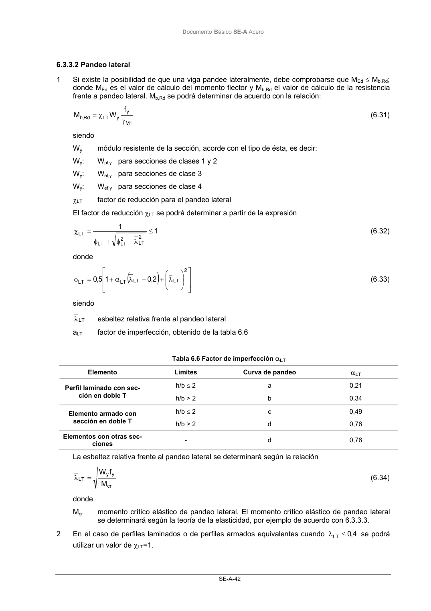

DB-SE-A Acero · edición 2007-10-23 · capa oficial
Documento DB-SE-A-oficial · SHA-256 del PDF 9ed9ea694aabfbda3bfbbef40dfe9223fde05d13c35bc2ba9751e5a96a22a64f
Página física 44 de 168.
Copia fiel del PDF fuente · Fuente oficial
Ficha de la disposición en la fuente oficial
Formato: Texto de la página (Markdown)
Documento Básico SE-A Acero SE-A-42 6.3.3.2 Pandeo lateral 1 Si existe la posibilidad de que una viga pandee lateralmente, debe comprobarse que MEd ≤ Mb,Rd; donde MEd es el valor de cálculo del momento flector y Mb,Rd el valor de cálculo de la resistencia frente a pandeo lateral. Mb,Rd se podrá determinar de acuerdo con la relación: 1 M y y LT Rd , b f W M γ χ = (6.31) siendo Wy módulo resistente de la sección, acorde con el tipo de ésta, es decir: Wy: Wpl,y para secciones de clases 1 y 2 Wy: Wel,y para secciones de clase 3 Wy: Wef,y para secciones de clase 4 χLT factor de reducción para el pandeo lateral El factor de reducción χLT se podrá determinar a partir de la expresión 1 1 2 LT 2 LT LT LT ≤ λ − φ + φ = χ (6.32) donde ( ) λ + − λ α + = φ 2 LT _ LT LT LT 2,0 1 5,0 (6.33) siendo LT λ esbeltez relativa frente al pandeo lateral aLT factor de imperfección, obtenido de la tabla 6.6 Tabla 6.6 Factor de imperfección αLT Elemento Límites Curva de pandeo αLT h/b ≤ 2 a 0,21 Perfil laminado con sec- ción en doble T h/b > 2 b 0,34 h/b ≤ 2 c 0,49 Elemento armado con sección en doble T h/b > 2 d 0,76 Elementos con otras sec- ciones - d 0,76 La esbeltez relativa frente al pandeo lateral se determinará según la relación cr y y LT M f W = λ (6.34) donde Mcr momento crítico elástico de pandeo lateral. El momento crítico elástico de pandeo lateral se determinará según la teoría de la elasticidad, por ejemplo de acuerdo con 6.3.3.3. 2 En el caso de perfiles laminados o de perfiles armados equivalentes cuando 4 ,0 LT ≤ λ se podrá utilizar un valor de χLT=1.

Datos candidatos: compruebe celdas y notas en el PDF.